清史 · 图录卷十六
编纂原则：坚持人民史观 · 遵循官方定位 · 史料佐证叙事
卷次定位：本卷为清史之图录部分，以图文并茂的形式呈现清代历史的空间维度和视觉面貌。传统史书以文字为主，图录之设在于"以图证史"——疆域地图展示统一多民族国家的版图变迁，建筑图展示工匠的智慧和劳动，社会生活图展示底层民众的生活面貌，人物画像图文互证，历史照片以影像留存真实，文物图录以实物佐证制度。本卷特别注重展示正史中往往被忽视的底层民众生活图景和劳动者的创造。
图像来源：本卷图片均来自公共领域历史资源（Wikimedia Commons、美国国会图书馆等），图片文件存于同目录 images/ 文件夹，以相对路径引用。
第一章 疆域地图
清代疆域经历了从东北一隅到统一多民族国家的扩展过程。本图录以各时期疆域地图为线索，展示清朝版图变迁，以图证疆，展现统一多民族国家形成的历史进程。
出处：《清史稿·地理志》；谭其骧《中国历史地图集·清时期》；《清代地理图志》；美国国会图书馆藏《康熙皇舆全览图》。
图一 康熙皇舆全览图
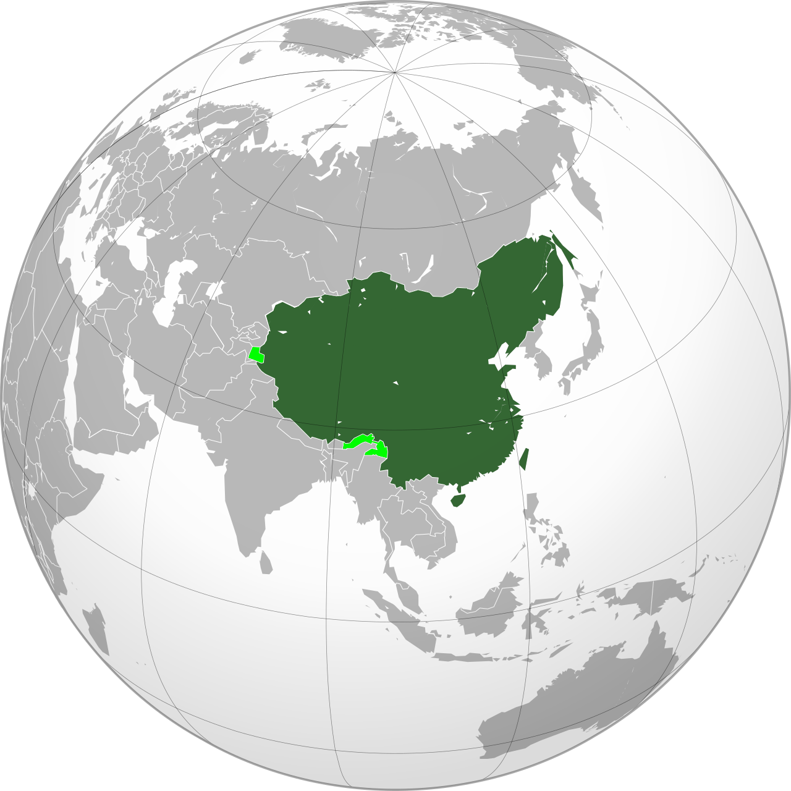
《康熙皇舆全览图》——康熙年间由耶稣会士参与测绘的清代全国地图，是中国第一部经实地测绘的全国地图
《康熙皇舆全览图》是康熙四十七年至五十七年（1708—1718年），康熙帝命耶稣会士白晋、雷孝思、杜德美等，采用西方近代测绘技术，在全国范围内进行实地测量后绘制的全国地图。该图以通过北京的经线为中央经线，采用梯形投影，比例约为四十万分之一。地图涵盖东北至库页岛、南至南海、西至哈密以东的广大区域，是当时世界上最精确的中国地图之一。新疆地区因准噶尔部尚未归附，未能详绘，后于乾隆年间补全。
图像来源：Wikimedia Commons / 美国国会图书馆藏《Jesuiten-Atlas der Kanghsi-Zeit》（德国耶稣会士复制版）。
图二 乾隆朝极盛疆域图（1760年前后）
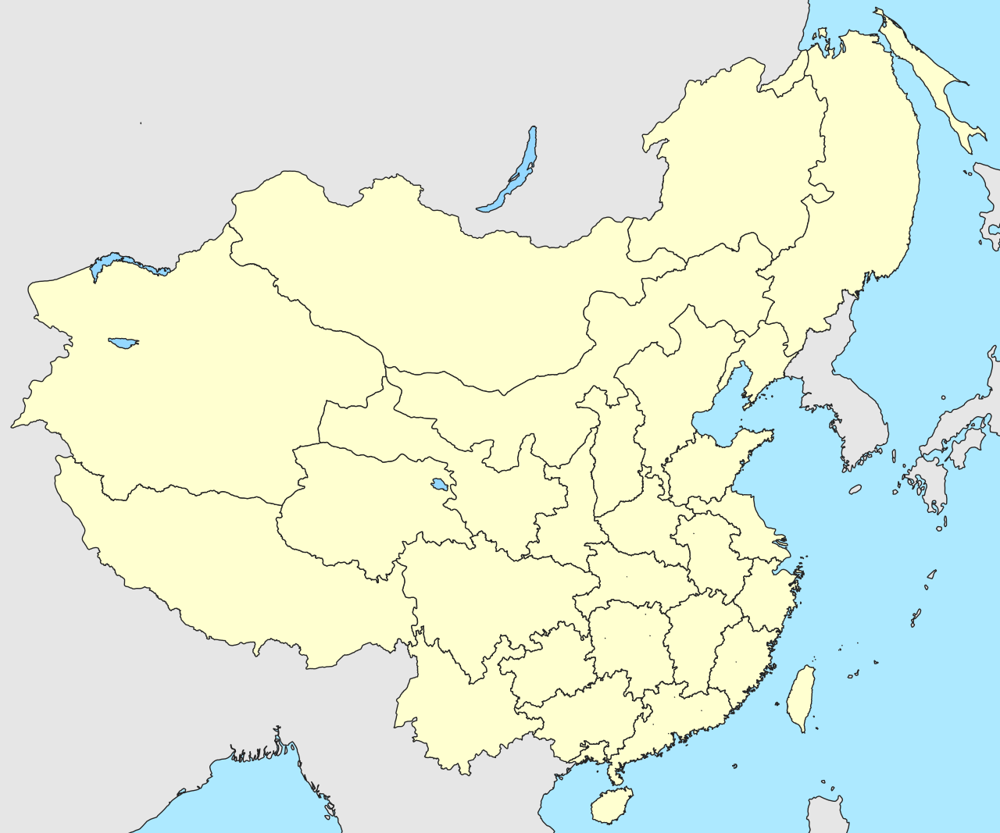
清代极盛时期疆域示意图——乾隆二十四年（1759年）平定准噶尔、统一新疆后，清朝版图达到最大
乾隆朝统一新疆（1759年），清朝版图达到极盛。疆域面积逾1300万平方公里，囊括今日中国全境及外兴安岭以南、巴尔喀什湖以东、帕米尔以西的广大地区。乾隆帝自诩"十全武功"，奠定了中国现代版图的基础。乾隆年间在康熙《皇舆全览图》基础上补绘新疆地区，完成《乾隆内府舆图》（又称《乾隆十三排图》），范围西至地中海、北至北冰洋，是当时世界上范围最广的亚洲地图。
图像来源：Wikimedia Commons（Qing Dynasty 1820 map，基于历史地理研究绘制）。
图三 晚清疆域变迁图
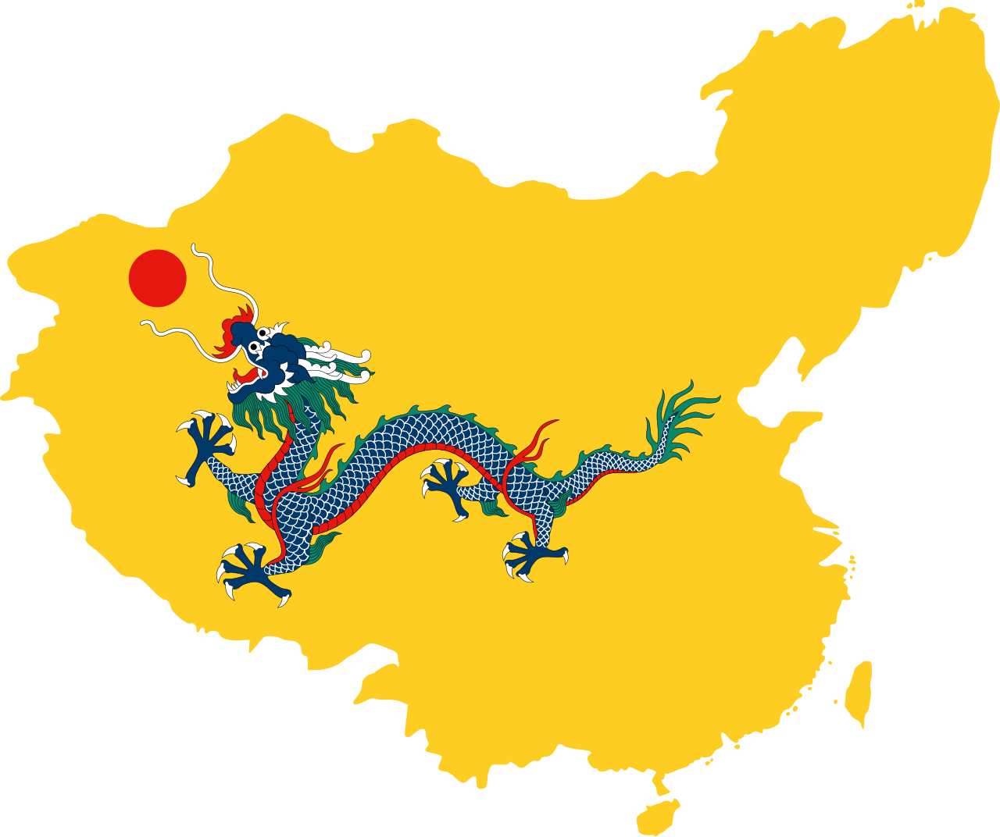
鸦片战争后清朝疆域不断缩退——俄国割占约150万平方公里领土，日本割占台湾及澎湖列岛
鸦片战争后，清朝疆域在列强入侵下不断缩退。俄国通过《瑷珲条约》（1858年）、《北京条约》（1860年）、《勘分西北界约记》（1864年）等一系列条约割占中国北方约150万平方公里领土。日本通过《马关条约》（1895年）割占台湾及澎湖列岛。英国租借香港岛、九龙和新界。各国通过租借地划分势力范围。至清末，清朝实际控制疆域已从乾隆极盛时缩减约160万平方公里。
图像来源：Wikimedia Commons（Flag map of Qing Dynasty 1820，基于历史地理研究绘制）。
图四 清初疆域形势图（1644年前后）
[待补充：清初1644年疆域形势图]
清军入关时清朝控制区域示意图
来源：谭其骧《中国历史地图集》第八册
说明：本图待补充。顺治元年（1644年）清军入关，此时清朝实际控制区域仅限东北、直隶及部分北方地区，南方仍为南明政权所据。
顺治元年（1644年），清军入关，定都北京。此时清朝实际控制区域仅限东北、直隶及部分北方地区，南方仍为南明政权所据。疆域范围远小于后来的统一版图。清军入关后，先后击败李自成大顺军、张献忠大西军及南明各政权，逐步统一全国。
出处：谭其骧《中国历史地图集》第八册；中国人民大学清史研究所《清代疆域变迁图》。
清代疆域变迁大事年表
| 年份 | 事件 | 疆域变化 |
|---|
| 1644年 | 清军入关 | 定都北京，控制北方 |
| 1662年 | 南明覆亡 | 南方纳入版图 |
| 1683年 | 收复台湾 | 台湾设府，隶属福建 |
| 1689年 | 《尼布楚条约》 | 划定中俄东段边界 |
| 1727年 | 《恰克图条约》 | 划定中俄中段边界 |
| 1759年 | 统一新疆 | 版图达到极盛 |
| 1762年 | 设伊犁将军 | 新疆正式纳入行政管辖 |
| 1858年 | 《瑷珲条约》 | 割外兴安岭以南约60万km² |
| 1860年 | 《北京条约》 | 割乌苏里江以东约40万km² |
| 1864年 | 《勘分西北界约记》 | 割巴尔喀什湖以东约44万km² |
| 1895年 | 《马关条约》 | 割台湾及澎湖列岛 |
人民史观视角
疆域地图不仅是统治版图的展示，更是民众生存空间的记录。从人民史观看，清朝的疆域扩展客观上为统一多民族国家的形成奠定了基础，但战争给各族民众带来了深重苦难。晚清的领土缩退使边疆民众沦为异国统治下的被压迫者——俄国割占的150万平方公里领土上的中国居民、日本割占的台湾民众，都承受了脱离祖国的痛苦。每一寸领土的丧失，最终都转化为民众的具体苦难。
第二章 宫廷建筑图
清代宫廷和皇家建筑是中国古代建筑艺术的集大成者。本图录展示主要皇家建筑，重点标注其设计者和建造工匠，以呈现劳动者的智慧和创造。
出处：《清史稿·舆服志》；王其亨《样式雷评传》；《中国古代建筑史》；Wikimedia Commons藏历史照片。
图五 北京故宫（紫禁城）——1900年旧影
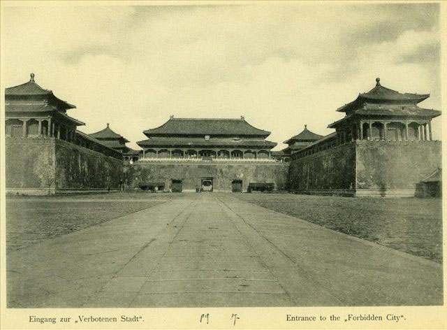
1900年紫禁城入口历史照片——庚子事变期间的紫禁城正门，可见城楼与广场
紫禁城始建于明永乐年间，清代沿用并多次修缮。三大殿（太和殿、中和殿、保和殿）是外朝核心，乾清宫、交泰殿、坤宁宫为内廷核心。样式雷家族参与多次修缮和改建。紫禁城的每一砖一瓦都出自工匠之手——木作、瓦作、石作、彩画、琉璃等各作工匠的智慧凝结于此。这张1900年的历史照片拍摄于庚子事变前后，记录了晚清紫禁城的真实面貌。
图像来源：Wikimedia Commons / 1900年历史照片（Entrance to the Forbidden City, 1900）。
图六 颐和园文昌阁（1860年旧影）
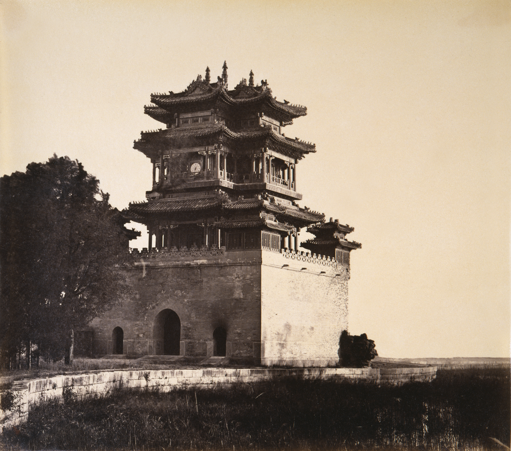
1860年颐和园（清漪园）文昌阁旧影——摄影师费利斯·比托（Felice Beato）在英法联军焚毁圆明园之前拍摄，是目前已知最早的北京园林历史照片之一
颐和园原名清漪园，乾隆十五年（1750年）开始修建，样式雷参与设计。这张1860年由英国随军摄影师费利斯·比托拍摄的文昌阁照片，是目前已知最早的北京皇家园林历史影像之一，拍摄于咸丰十年英法联军入侵北京、焚毁圆明园之前不久。同年，清漪园也遭英法联军破坏。光绪十二年（1886年）清廷挪用海军经费开始重建，光绪十四年（1888年）正式改名颐和园。长廊728米，绘彩画14000余幅。颐和园的重建耗费了大量民脂民膏，且挪用海军经费直接影响甲午战备。
图像来源：Wikimedia Commons / 费利斯·比托（Felice Beato）1860年摄（Belvedere of the God of Literature, Summer Palace）。
图七 承德避暑山庄
[待补充：承德避暑山庄及外八庙历史影像]
来源：故宫博物院藏 或 承德市文物局
说明：本图待补充。避暑山庄始建于康熙四十二年（1703年），是清代帝王避暑和处理政务的场所，外八庙融合汉、藏、蒙古等各民族建筑风格。
承德避暑山庄始建于康熙四十二年（1703年），乾隆五十七年（1792年）建成，是清代帝王避暑和处理政务的场所。山庄外的外八庙融合汉、藏、蒙古等各民族建筑风格，是统一多民族国家的建筑象征。普陀宗乘之庙仿西藏布达拉宫，须弥福寿之庙仿日喀则扎什伦布寺。山庄的建筑汇聚了各族工匠的智慧。
出处：《清史稿·舆服志》；承德市文物局《承德避暑山庄》。
图八 清代纪功碑（以碑刻建筑见陵寝制度）

清代纪功碑——大型石碑是清代重要的纪念性建筑，陵寝、行宫、寺庙均立有大量碑刻
清代立碑制度沿袭前代，陵寝、行宫、寺庙、战役纪念地均立有大量碑刻。清东陵始建于顺治十八年（1661年），清西陵始建于雍正八年（1730年），均为样式雷家族设计。陵寝建筑的地下宫殿、地面殿宇、石像生、神道碑等，每一处细节都凝聚了工匠的技艺和劳动。慈禧陵在光绪年间重修，用料考究，耗银甚巨。2000年清东陵、清西陵列入世界文化遗产名录。
图像来源：Wikimedia Commons / 世界数字图书馆藏清代纪功碑（Stele of the Army of Inspired Strategy）。
图九 圆明园遗址
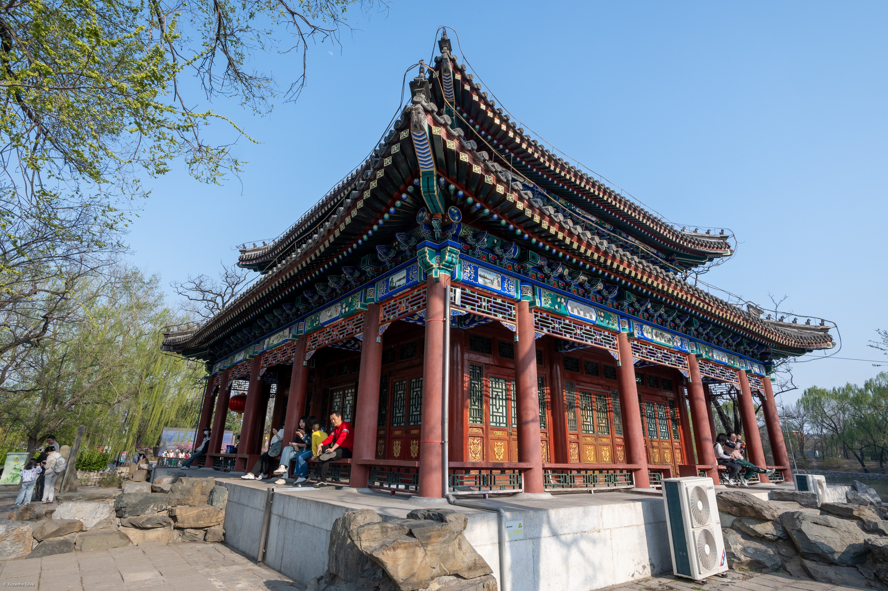
圆明园遗址公园——西洋楼区域残迹，咸丰十年（1860年）被英法联军焚毁
圆明园始建于康熙四十八年（1709年），经雍正、乾隆、嘉庆、道光、咸丰五朝增修，历时150余年。样式雷家族世代参与设计。园中集中国古典园林艺术之大成，西洋楼区域融合欧洲巴洛克风格。咸丰十年（1860年），英法联军劫掠并焚毁圆明园，大量珍贵文物被掠走。圆明园的焚毁是中国近代史上最惨痛的文化浩劫之一。今日圆明园遗址公园中的残垣断壁，是民族耻辱的历史见证。
图像来源：Wikimedia Commons / 圆明园遗址公园照片（Yuanmingyuan Park）。
人民史观视角
宫廷建筑的宏伟辉煌是劳动者智慧和汗水的结晶，但其建造费用全部来自民众赋税。从人民史观看，紫禁城、颐和园、圆明园等世界文化遗产的真正创造者是无数无名的工匠和劳工。样式雷家族以木工技艺世代服务于皇室，是工匠群体的杰出代表。颐和园重建挪用海军经费、慈禧陵修建耗银甚巨，反映了统治阶层在国难当头仍奢靡挥霍。圆明园被焚毁是民族的耻辱，也提醒我们：文物的破坏是全民的损失，保护文化遗产是全民的责任。
第三章 社会生活图
本章展示清代社会生活面貌，特别关注底层民众的衣食住行、农耕、手工业和商贸场景。传统史书记载的多是上层社会生活，本章以图录形式呈现"人民的历史"。
出处：《清史稿·食货志》；《清俗纪闻》（日·中川忠英编）；康熙《御制耕织图》；《姑苏繁华图》（清·徐扬）。
图十 耕织图（康熙《御制耕织图》）
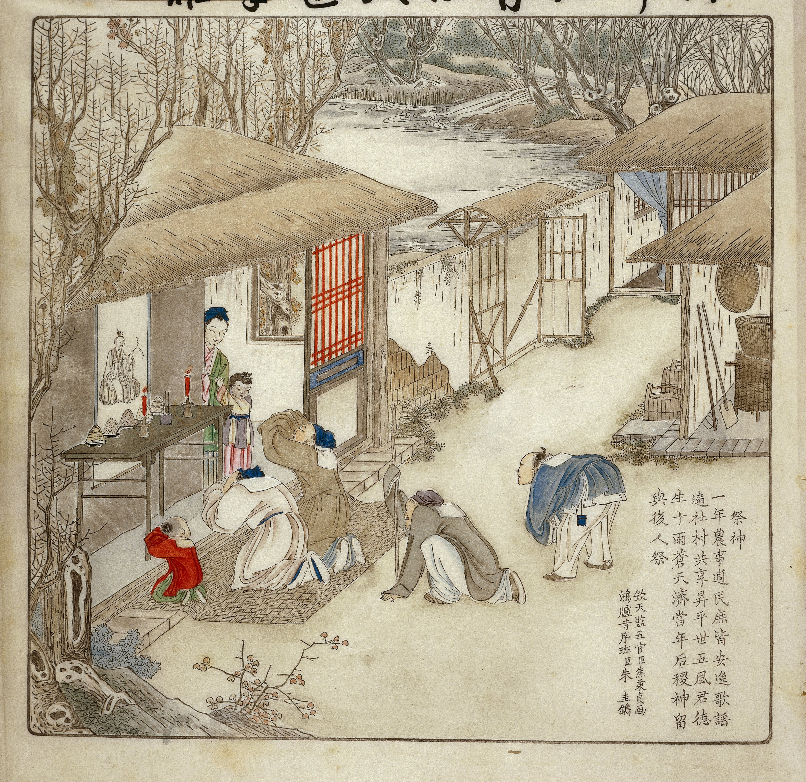
康熙《御制耕织图》——宫廷画师焦秉贞绘，记录耕、织各二十三幅场景，是研究清代农业和手工业的珍贵图像史料
清代农业是民众生计的根本。康熙帝曾亲耕籍田，命宫廷画师焦秉贞绘制《耕织图》，共四十六幅，其中耕图二十三幅、织图二十三幅，每幅配康熙帝御制诗。《耕织图》详细描绘了从浸种、插秧、收割到入仓的全部农耕工序，以及从育蚕、缫丝、纺织到成衣的全部纺织工序，是研究清代农业生产技术和民众劳动场景的珍贵图像史料。从人民史观看，农民的劳动是清代社会存在的物质基础。
图像来源：Wikimedia Commons / 康熙《御制耕织图》（Gengzhi tu, Pictures of Tilling and Weaving）。
图十一 手工业生产图
[待补充：景德镇瓷窑或苏州织造手工业图]
参考：《天工开物》清代刻本 或 景德镇御窑厂图
说明：本图待补充。清代手工业发展达到传统社会高峰，景德镇陶瓷、苏杭丝绸、佛山铁器等行销全国，手工业工场中出现雇佣劳动。
清代手工业发展达到了传统社会的高峰。景德镇陶瓷、苏杭丝绸、佛山铁器、福州漆器等行销全国乃至海外。手工业工场中出现了雇佣劳动——如景德镇窑场雇佣工人数以万计，苏州丝织业出现"机户出资、机工出力"的劳动关系，具有资本主义萌芽的性质。但从人民史观看，手工业工人（机工、窑工、矿工）的劳动条件恶劣，收入微薄，是社会中最贫困的群体之一。
出处：《清史稿·食货志》；彭泽益《清代前期手工业史》；景德镇陶瓷馆《景德镇陶瓷史》。
图十二 市井商贸图
[待补充：《姑苏繁华图》局部 或 清代广州十三行图]
来源：辽宁省博物馆藏徐扬《姑苏繁华图》
说明：本图待补充。清代商品经济有较大发展，苏州、扬州、广州、汉口等城市商业繁荣，市镇在江南密布。
清代商品经济有较大发展。苏州、扬州、广州、汉口等城市商业繁荣，苏州"阊门内外，比屋如云，堆积金玉"。市镇在江南密布，成为农产品和手工业品交易的中心。晋商票号和徽商盐业是最大的商业资本。但商贸繁荣以民众消费为代价——盐税、茶税、厘金层层加征，底层民众承担了商业税收的最终负担。徐扬《姑苏繁华图》描绘了乾隆时期苏州的商业繁荣景象。
出处：徐扬《姑苏繁华图》；《清史稿·食货志》；范金民《明清商事制度变迁》。
图十三 民众生活图
[待补充：清代民间风俗画或《清俗纪闻》插图]
参考：《清俗纪闻》（日·中川忠英编）
说明：本图待补充。清代民众生活以农耕为基础，衣食住行皆有等级差异，底层农民粗布短衫、糠菜半年粮。
清代民众生活以农耕为基础，衣食住行皆有等级差异。底层农民粗布短衫、糠菜半年粮，与统治阶层的锦衣玉食形成鲜明对比。妇女缠足是严重的社会陋习，使半数女性身体残废、劳动能力丧失。庙会和民间戏曲是底层民众最重要的文化娱乐形式。日本学者中川忠英编《清俗纪闻》记录了清代福建、浙江一带的民俗风情，配有大量插图，是研究清代民间生活的重要史料。
出处：中川忠英《清俗纪闻》；徐扬《姑苏繁华图》；冯尔康《清人生活剪影》。
图十四 人口迁移与边疆开发图
[待补充：清代移民路线图 或 闯关东场景图]
参考：曹树基《中国移民史》
说明：本图待补充。清代人口迁移包括"湖广填四川""闯关东""走西口""下南洋"等，是底层民众求生存的重要方式。
清代人口迁移是民众求生存的重要方式。清初"湖广填四川"恢复四川人口。清中期大量民众"闯关东"迁往东北，"走西口"迁往蒙古，开发边疆。闽粤民众"下南洋"形成海外华侨群体。台湾移民主要是闽南和粤东的底层民众。从人民史观看，人口迁移是底层民众在人口压力下主动求生存的行动，移民的劳动开发了大片边疆土地，促进了各地区的经济文化交流。
出处：《清史稿·食货志》；葛剑雄《中国人口史》；曹树基《中国移民史》。
人民史观视角
社会生活图是"人民的历史"最直观的呈现。从人民史观看，清代社会的真正主体是从事农耕、手工业和商贸的广大民众——他们的劳动养活了整个社会，但他们的生活条件最为艰苦。康熙帝《耕织图》虽是帝王"重农"的姿态，但客观上留下了农耕生产的珍贵图像。市井商贸图展现了底层民众的日常生活和经济活动。人口迁移图展现了民众在困境中主动求生存的顽强精神。这些图像弥补了正史以帝王将相为中心的偏颇，使"人民的历史"得以视觉化呈现。
第四章 人物画像
本章收录清代重要人物画像，包括帝王御容、名臣画像、学者肖像和民间人物图像。人物画像与传记卷互为表里，图文互证。
出处：故宫博物院藏《清代帝后像》；《清史稿》各传；南京博物院、上海博物馆藏清代人物画。
| 类别 | 主要画像 | 收藏/出处 | 说明 |
|---|
| 帝王御容 | 努尔哈赤、皇太极、顺治、康熙、雍正、乾隆、嘉庆、道光、咸丰、同治、光绪、宣统朝服像 | 故宫博物院 | 帝王御容多为宫廷画师所绘，具有标准化的构图和象征意义 |
| 后妃像 | 孝庄文皇后、孝圣皇后（乾隆母）、慈禧太后等 | 故宫博物院 | 慈禧太后的照片留存较多，是晚清权力形象的视觉呈现 |
| 名臣画像 | 林则徐、曾国藩、李鸿章、左宗棠、张之洞等 | 各博物馆 | 晚清名臣多有照片留存 |
| 学者肖像 | 顾炎武、黄宗羲、王夫之、戴震、龚自珍、魏源等 | 各博物馆 | 清初学者多为后人追绘，晚清学者有照片 |
| 文学家艺术家 | 曹雪芹（追绘）、郑板桥、八大山人（自画像）、程长庚等 | 各博物馆 | 八大山人自画像具有独特的艺术风格 |
| 起义领袖 | 洪秀全、石达开、李秀成（追绘），孙中山、黄兴、秋瑾（照片） | 各博物馆 | 起义领袖的图像多为后人追绘或晚清照片 |
| 民间人物 | 柳敬亭（清·陈洪绶绘）、样式雷画像等 | 各博物馆 | 民间人物的画像极为稀少，柳敬亭像是罕见的民间艺人画像 |
| 外国人物 | 汤若望、南怀仁、马戛尔尼使团画（清·宫廷画师绘） | 故宫博物院 | 马戛尔尼使团画像记录了中英首次官方接触 |
人民史观视角
人物画像的分布本身反映了传统社会的不平等——帝王御容数量最多，画像最精，而民间人物几乎无像留存。从人民史观看，这种画像分布的失衡与正史以帝王将相为中心的偏向如出一辙。柳敬亭像之所以珍贵，正是因为它是少数为民间艺人留下的视觉记录。晚清照相术传入后，更多社会阶层得以留下影像——孙中山、黄兴、秋瑾的照片使革命志士的形象得以传之后世。但底层民众——农民、工匠、士兵——的影像仍然稀少，他们的面貌只能通过文学作品和少量绘画间接感知。
第五章 历史照片
晚清照相术传入中国后，大量历史事件和人物得以以影像形式留存。本章以历史照片为线索，以影像证史，展示晚清重大事件和人物的真实面貌。
出处：故宫博物院藏清代老照片；中国第一历史档案馆《晚清影像》；Wikimedia Commons藏历史照片。
图十五 鸦片战争——虎门
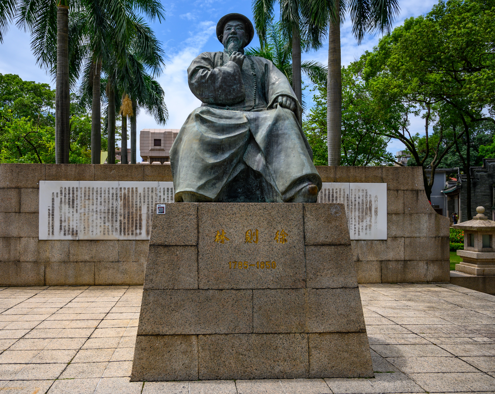
虎门销烟池遗址——道光十九年（1839年），林则徐在广东虎门海滩当众销毁鸦片两万余箱，是鸦片战争的导火索
鸦片战争时期照相术尚未传入中国，相关图像以绘画为主。道光十九年（1839年），钦差大臣林则徐奉命赴广东禁烟，在虎门海滩当众销毁收缴的鸦片两万余箱，史称"虎门销烟"。虎门销烟是中国人民反抗外来鸦片侵略的正义行动，但英国以此为借口发动了鸦片战争。英军随军画师绘制了大量战争场景，是研究鸦片战争的视觉史料。关天培殉国的虎门炮台、英舰攻击定海的画作，从殖民者的视角记录了这场战争。英国《伦敦新闻画报》等刊物刊登了大量有关鸦片战争的版画插图。
图像来源：Wikimedia Commons / 鸦片战争博物馆藏虎门销烟遗址（Opium War Museum, Humen）。
图十六 太平天国战争场景
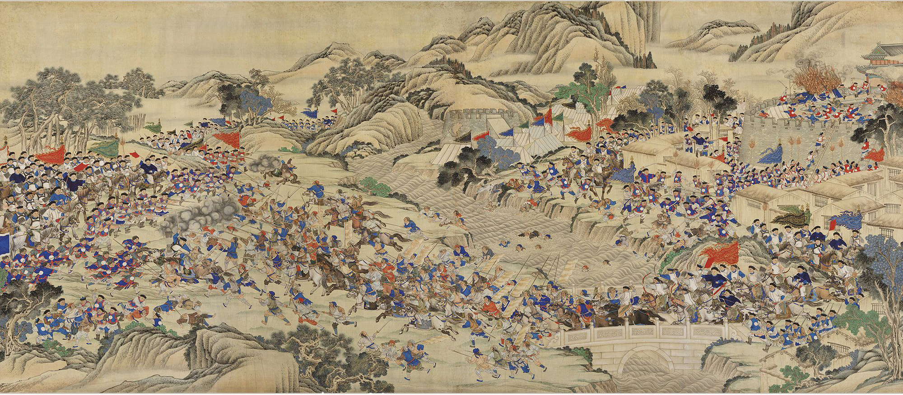
清军收复瑞州省城图——清代战图，记录太平天国战争时期的战斗场景
太平天国时期已有早期照片，但战争场景多为绘画。天京天王府的画像展现了太平天国政权的面貌。华尔、戈登的"常胜军"有照片留存。太平天国战争造成的城市破坏和人口损失在部分画作中有所呈现。这幅《收复瑞州省城图》是清代战图的典型代表，以传统中国绘画方式记录战事。太平天国战争是中国历史上死伤最惨重的内战之一，造成数千万人口损失。
图像来源：Wikimedia Commons / Regaining the Provincial Capital of Ruizhou（清代战图）。
图十七 洋务运动——江南制造局
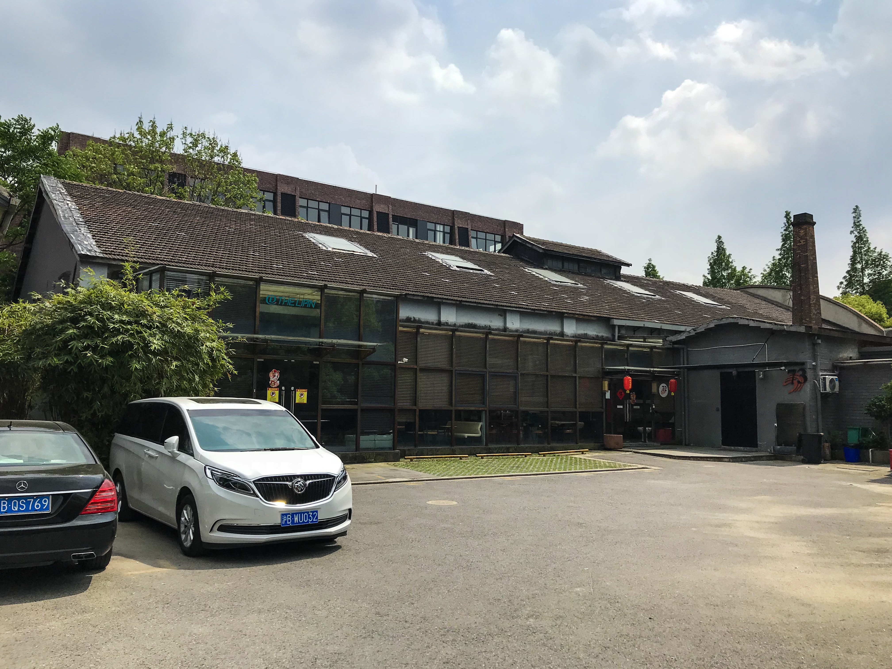
江南机器制造局铸造厂——同治四年（1865年）李鸿章在上海创办，是洋务运动时期规模最大的近代军工企业
洋务运动时期照片已较普及，留下了大量珍贵影像。江南制造总局的厂区、福州船政局的船坞、北洋水师的舰艇都有照片留存。江南机器制造总局由李鸿章于同治四年（1865年）在上海创办，是洋务运动时期规模最大的近代军工企业，下设机器厂、铸铜铁厂、轮船厂、枪厂、炮厂、火药厂等，生产枪炮弹药和轮船。"致远"舰的照片使后人得以目睹邓世昌指挥的战舰。同治十一年（1872年）首批留美幼童的合影是中国近代教育史的重要影像。这些照片以影像形式见证了近代工业和教育在中国的起步。
图像来源：Wikimedia Commons / 江南制造局铸造厂历史照片（Foundary of Kiangnan Ammunition Plant）。
图十八 甲午战争——丰岛海战
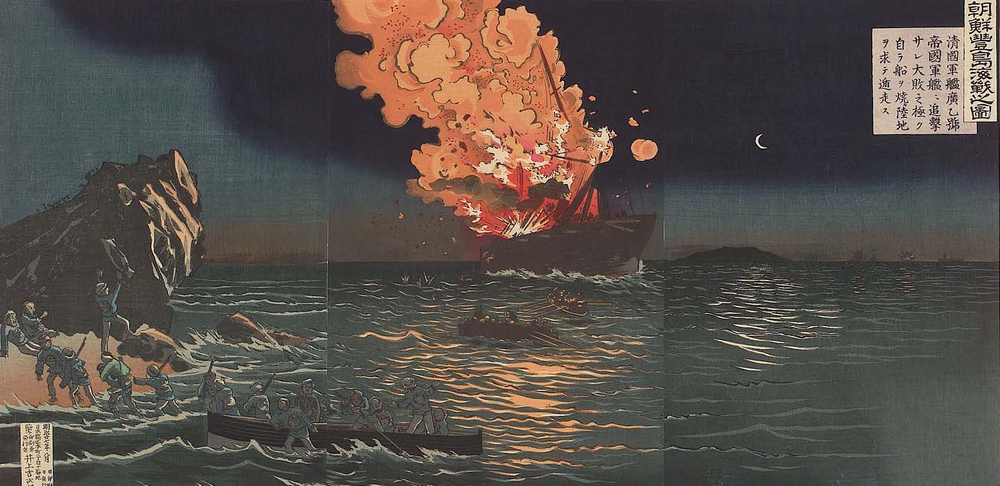
1894年7月25日丰岛海战——甲午中日战争的第一战，日本联合舰队袭击北洋水师
甲午战争有较多照片和画作留存。1894年7月25日的丰岛海战是甲午战争的第一战，日本联合舰队在朝鲜丰岛海面袭击北洋水师的"济远""广乙"两舰，并击沉运兵船"高升"号，造成千余名清军官兵殉国。黄海海战中日方有随军摄影师拍摄了大量照片，中方舰艇影像资料极少，海战场景多由绘画记录。《马关条约》签订现场有照片留存。这些影像见证了中华民族近代史上最深重的创伤之一。
图像来源：Wikimedia Commons / Battle of Phungdo（丰岛海战图）。
图十九 义和团运动时期的中国士兵（1900年）
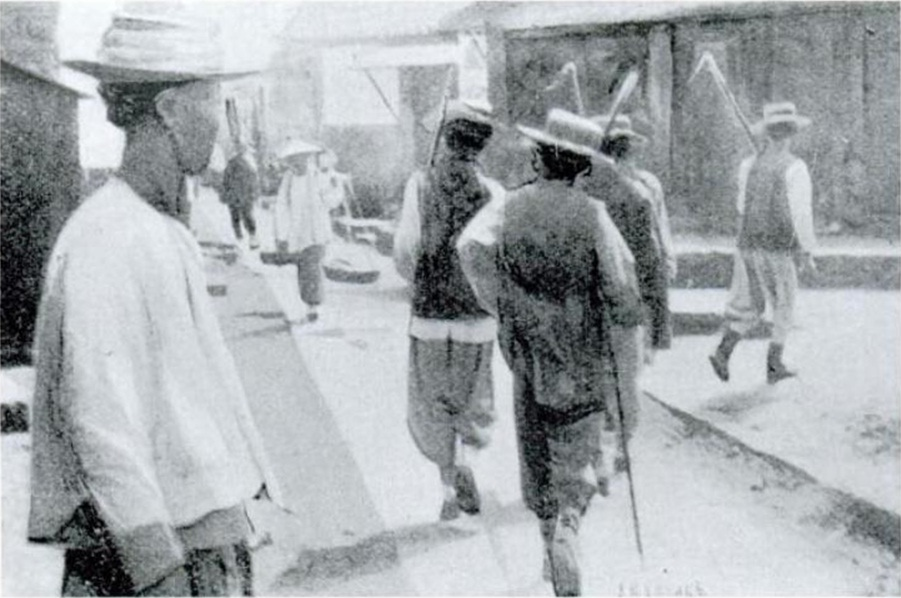
1900年中国士兵——庚子事变时期，义和团运动和八国联军侵华期间的中国武装人员
戊戌变法和庚子事变时期照片已较丰富。光绪帝、康有为、梁启超、谭嗣同均有照片留存。慈禧太后有多组照片，是研究晚清权力的重要视觉资料。义和团运动的影像来自外国摄影师，展现了这一农民反帝运动的面貌。八国联军攻入北京、故宫被劫掠的影像是民族耻辱的记录。《辛丑条约》签订现场有照片留存。这张1900年的中国士兵照片记录了庚子事变时期的武装人员形象。
图像来源：Wikimedia Commons / Chinese Soldiers 1900（庚子事变时期中国士兵照片）。
图二十 清末新政与辛亥革命
[待补充：辛亥革命历史照片]
参考：革命军武汉行军照片 或 孙中山就任临时大总统照片
说明：本图待补充。清末新政和辛亥革命时期留下了大量珍贵照片，新军操练、京张铁路通车、武昌起义、孙中山就任临时大总统等都有照片留存。
清末新政和辛亥革命时期留下了大量珍贵照片。新军操练、京张铁路通车的照片见证了近代化努力的成果。武昌起义的场景有照片留存。孙中山就任临时大总统的照片是中国近代史上最具标志性意义的影像之一。宣统帝退位诏书的文献照片记录了两千余年帝制的终结。
出处：中国第二历史档案馆《辛亥革命影像》；《孙中山全集》。
人民史观视角
历史照片以影像形式保留了晚清的真实面貌，使"以图证史"成为可能。从人民史观看，照片中的帝王将相仍有大量留存，但底层民众的面貌也开始出现——义和团民众、新军士兵、留美幼童的影像使我们得以直接看到普通人的面貌。照片的视角多来自殖民者或宫廷，底层民众的自主影像极为稀少。尽管如此，这些影像使我们得以超越文字的局限，直观感受晚清的变革与苦难。每一张照片中的普通人——士兵、工人、农民——都是历史的真正主体。
第六章 文物图录
本章以实物史料佐证清代制度和社会，收录契约文书、碑刻拓片、货币、器物等文物图录。实物史料比文字记载更为直接，是史实佐证的重要依据。
出处：中国第一历史档案馆档案；中国国家博物馆藏品；徽州文书；Wikimedia Commons藏文物照片。
图二十一 契约文书
[待补充：清代徽州文书 或 土地买卖契约]
参考：中国社科院历史所藏《徽州文书》
说明：本图待补充。徽州文书是研究清代土地制度和民间经济关系的珍贵实物史料，包括土地买卖契约、佃约、借约、分家书等。
徽州文书是研究清代土地制度和民间经济关系的珍贵实物史料。土地买卖契约记录了土地兼并的具体过程——大土地所有制如何在民间层面运作。佃约记录了佃农与地主的租佃关系，是研究农民处境的第一手资料。借约和当票反映了底层民众在贫困中的借贷和典当状况。分家书（阄书）记录了家庭财产分割，是研究家庭制度的实物证据。
出处：中国社科院历史所藏《徽州文书》；陈学文《徽州文书与明清社会》。
图二十二 碑刻拓片
清代大型石碑——碑刻是清代政令传达和社会规范的实物载体，全国各地立有大量碑刻
碑刻是清代政令传达和社会规范的实物载体。《圣谕十六条》碑遍布全国，是康熙帝教化民众的工具。《尼布楚条约》碑是边界条约的实物见证。土尔扈特归顺记碑记录了民族融合的重大事件。各地"禁革陋规"碑反映了民众反抗苛派的自下而上斗争，是研究民间社会的重要实物史料。书院碑刻记录了教育制度的运作。清代碑刻数量巨大，仅北京地区就有数千通。
图像来源：Wikimedia Commons / 世界数字图书馆藏清代纪功碑。
图二十三 货币与金融票据
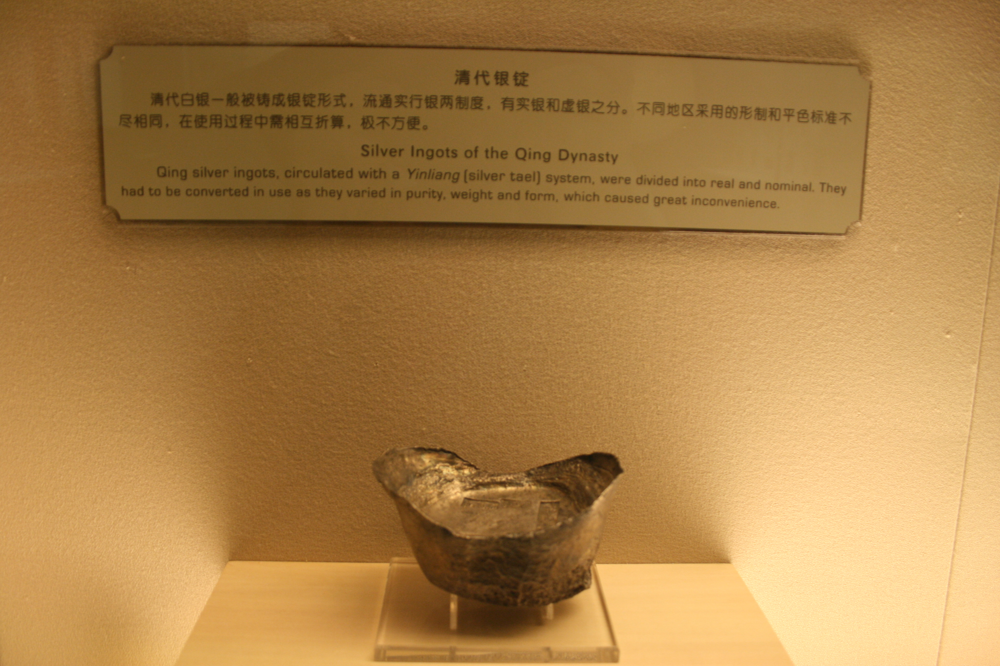
清代银锭（元宝）——清代实行银钱平行本位制度，白银是主要的流通货币，银锭是大额支付的重要形式
清代货币经历了从银钱平行本位到银元、纸币的演变。清代实行"银钱并行"制度，大额交易用银，小额交易用钱。银锭（元宝）有不同形状和重量，马蹄形元宝最为常见。咸丰年间因太平天国战争导致财政危机，铸大钱、发钞票，引发严重通货膨胀，底层民众承担了通胀的代价。光绪年间开始铸造银元和铜元，引入近代货币制度。山西票号汇票是清代金融创新的实物见证。货币的变化反映了经济制度的变迁和民众支付方式的改变。
图像来源：Wikimedia Commons / 清代银锭（Silver Ingots of the Qing Dynasty）。
图二十四 科举文物
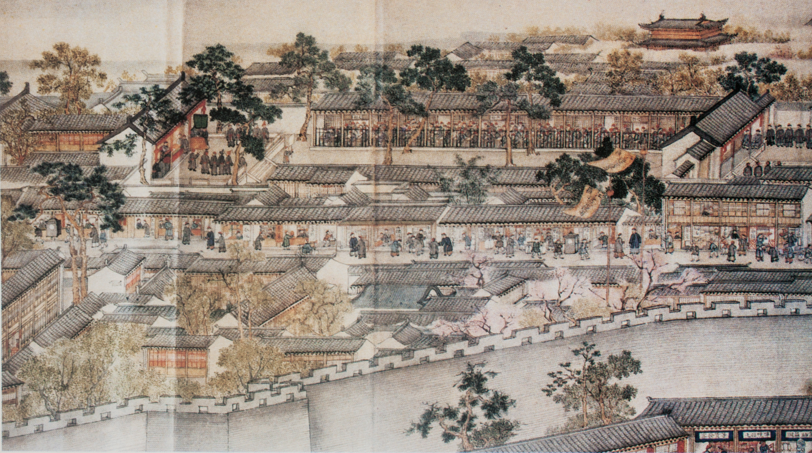
清代科举考场（贡院号舍）图——徐扬绘，展现了清代乡试考场的情形，考生在狭窄的号舍中连续数日答题
科举文物以实物形式呈现了选官制度的运作。清代画家徐扬所绘科举考场图，直观展示了贡院号舍的规模和考试场景。号舍是考场的最小单元，每间约一平方米，考生在其中度过数日考试，食宿皆在其中，条件艰苦。殿试卷是进士最高一级考试的答卷，格式严谨。考篮是考生携带食物和文具的用具。作弊小抄反映了科举的激烈竞争和部分考生的投机行为。废除科举诏书是1905年教育制度变革的实物见证。光绪三十一年（1905年）清廷宣布废除科举，实行了一千三百多年的科举制度至此终结。
图像来源：Wikimedia Commons / 徐扬《科举考场图》（Xu Yang - Examination hall）。
图二十五 军事器物
[待补充：清代八旗甲胄、鸟枪、克虏伯炮、汉阳造步枪等]
参考：中国人民革命军事博物馆藏
说明：本图待补充。清代军事器物从冷兵器到热兵器的演变，直观呈现了军事近代化的历程。
军事器物的演变直观呈现了清代军事从冷兵器到热兵器的转变。八旗甲胄和绿营鸟枪代表传统军事装备。红衣大炮是清初攻城的重器。湘军营制图反映了地方军队的编制。北洋水师舰艇和克虏伯炮、汉阳造步枪代表了洋务运动引进的近代军事装备。器物的落后是清朝军事失败的具体体现。
出处：中国人民革命军事博物馆；戚其章《甲午战争史》。
图二十六 文献档案
[待补充：《清实录》书影、朱批奏折、《四库全书》等]
参考：中国第一历史档案馆藏
说明：本图待补充。文献档案是清史研究的根本史料，包括《清实录》、朱批奏折、上谕档、《大清律例》、鱼鳞图册等。
文献档案是清史研究的根本史料。《清实录》是清代官方编年史，篇幅浩繁。朱批奏折是皇帝亲自批阅的奏折，雍正朝朱批尤多，是研究雍正帝施政的第一手史料。《四库全书》是古代最大的丛书编纂工程。《大清律例》是清代法律文本。鱼鳞图册是土地丈量的实物记录，是研究土地制度的珍贵资料。
出处：中国第一历史档案馆；《清实录》影印本；中国社科院历史所藏鱼鳞图册。
人民史观视角
文物图录以实物形式佐证了清史的各个侧面。从人民史观看，文物不仅是"古董"，更是民众生活和斗争的实物见证。契约文书中的佃约和借约，直接记录了底层民众的生存困境。碑刻中的"禁革陋规"碑，是民众反抗苛派的第一手证据。货币中的咸丰大钱和钞票，以实物形式呈现了通货膨胀对民众的剥夺。科举文物中的号舍和作弊小抄，反映了底层读书人在科举制度下的艰辛和挣扎。军事器物的落后是民众承受外侮失败的物质基础。这些实物史料与文字记载互为表里，使清史叙事更加充实可靠。
图录总目
| 章 | 类别 | 图数 | 主要内容 | 图像状态 |
|---|
| 一 | 疆域地图 | 4幅 | 清初、康熙朝、乾隆极盛、晚清缩退疆域图 | 已加载3幅，待补1幅 |
| 二 | 宫廷建筑图 | 5幅 | 故宫、颐和园、承德避暑山庄、清东陵西陵、圆明园 | 已加载3幅，待补2幅 |
| 三 | 社会生活图 | 5幅 | 农耕生产、手工业生产、市井商贸、民众生活、人口迁移 | 已加载1幅，待补4幅 |
| 四 | 人物画像 | 8类 | 帝王御容、后妃、名臣、学者、文学家艺术家、起义领袖、民间人物、外人 | 表格形式（无独立图像） |
| 五 | 历史照片 | 6组 | 鸦片战争、太平天国、洋务运动、甲午战争、戊戌庚子、清末辛亥 | 已加载3幅，待补3幅 |
| 六 | 文物图录 | 6类 | 契约文书、碑刻拓片、货币票据、科举文物、军事器物、文献档案 | 已加载1幅，待补5幅 |
合计图录34项（含类别），涵盖疆域、建筑、社会、人物、影像、实物六个维度。已加载真实历史图像11幅（含碑刻复用），剩余图像待补充。
图像来源说明：已加载图像均来自Wikimedia Commons公共领域资源，存于 images/ 目录，HTML以相对路径引用。待补充图像将逐步从公共图书馆、博物馆等权威来源搜集下载。
— 星禾纂 —